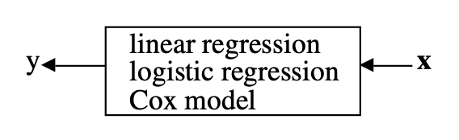
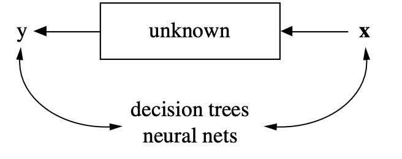

Welcome to Psych 532!
Today’s agenda
- Hello
- Some course mechanics
- The intellectual foundations of data science
About me
- Please call me Ariel and use he/him/his for my pronouns.
- I am a Research Associate Professor in the Department.
- My group is the Neuroinformatics R&D Group.
- My email address is arokem@uw.edu.
- More about course communications, below.
Course mechanics
Course website:
The course meets twice a week and will include three types of sessions:
- Lectures
- Lab
- Studio
Lectures
- Discussion of a specific topic, based on readings and slides.
- Associated assignment: Short reflection on the readings.
- Reflections should focus on the attempt to actively connect the reading to your subject matter interests in Psychology.
Labs
- Hands-on sessions focused on a specific tool or skill.
- Usually no associated assignment.
Studio
- Students show their work and receive feedback.
- Associated assignment: Share your materials in advance.
Projects
- Teams of 3/4 students
- Can be one of several kinds:
- Investigation of an interesting dataset
- Development of analysis software
- Reproducing a previous finding (and extending it)
- Execution can focus on one of the topics covered in the lectures
Evaluation details:
- Reading reflections: 30%
- Studio participation (includes providing feedback!): 30%
- Final project: 40%

“Inside out” projects
Show (and discuss) the “plumbing”
Chat GPT
- If you use LLM or similar technologies, you need to explain how and why you used this technology.
- You are responsible for your submitted work and any errors or cliches it contains, even if they were produced by an LLM.
- This includes use of co-pilot and similar code generating models.
- Disclaimer: I use co-pilot when I program.
- But I also have many years of experience programming without co-pilot
- I don’t usually use an LLM for writing, and I think it’s counterproductive (and potentially ethically dubious) to do so in 99% of use-cases.
If you have questions:
- Course GitHub Discussions.
- Please use this forum for questions that others may be able to help with.
- Email me: arokem@uw.edu.
- Please use “[PSYCH532]” in the subject line of your email so I don’t lose it.
Questions about course mechanics?
The intellectual foundations of data science
- What is data science?
- What is the role of data science in Psychology?
- What does it have to do with informatics? (What’s that, btw?)
David Donoho “50 years of data science”
David Donoho
- Statistician who has made fundamental contributions, including huge impact in application of “compressed sensing” in the geosciences.
- Together with other collaborators (Claerbout, Buckheit) also had impact in defining computational reproducibility. We’ll come back to that in a few weeks.
- The article starts with a critique of the ~2015 interest in “data science” within universities, and how it was constituted.
- Next, it walks through several milestones in the history of data science in the last 50 years.
John Tukey (1915-2000)
- Statistician. Probably one of the most influential scientists in the 20th century.
- Invented the Fast Fourier Transform.
- Invented the term (and methods of) Exploratory Data Analysis.

“The future of data analysis” (1962)
Donoho reminds us that all that is new is old again (or vice versa?).
Quoting Tukey:
For a long time I have thought I was a statistician, interested in inferences from the particular to the general. But as I have watched mathematical statistics evolve, I have had cause to wonder and to doubt. …All in all I have come to feel that my central interest is in data anal- ysis, which I take to include, among other things: procedures for analyzing data, techniques for interpreting the results of such procedures, ways of planning the gathering of data to make its analysis easier, more precise or more accurate, and all the machinery and results of (mathematical) statistics which apply to analyzing data”
“The future of data analysis” (1962)
And, also:
Four major influences act on data analysis today:
1. The formal theories of statistics
2. Accelerating developments in computers and display devices
3. The challenge, in many fields, of more and ever larger bodies of data.
4. The emphasis on quantification in an ever wider variety of disciplines.
Leo Breiman (1928-2005)
- Statistician, who returned to academia after some time doing a variety of consulting.
- Developed important data analysis algorithms (random forests, bagging).
- “Statistical modeling: The two cultures”
The two cultures


This idea had a huge influence. We’ll come back to it when we discuss machine learning in a few weeks.
A method to the madness?
The common task framework (CTF; Liberman 2010)
- A publicly available training dataset involving, for each observation, a list of (possibly many) feature measurements, and a class label for that observation.
- A set of enrolled competitors whose common task is to infer a class prediction rule from the training data.
- A scoring referee,to which competitors can submit their prediction rule. The referee runs the prediction rule against a testing dataset, which is sequestered behind a Chinese wall. The referee objectively and automatically reports the score (prediction accuracy) achieved by the submitted rule.
Examples
Netflix prize
ImageNet
DARPA Grand Challenges
BRATs
Fibercup phantom
Advantages
- Error rates decline by a fixed percentage each year, to an asymptote depending on task and data quality.
- Progress usually comes from many small improvements; a change of 1% can be a reason to break out the champagne.
- Shared data plays a crucial role — and is reused in unexpected ways.
“The unreasonable effectiveness of data” (2009)
Halevy, Norvig and Pereira, all Google researchers with background in AI research
In analogy to “The unreasonable effectiveness of mathematics in the natural sciences” (Wigner, 1960)
Perhaps when it comes to natural language processing and related fields, we’re doomed to complex theories that will never have the elegance of physics equations. But if that’s so, we should stop acting as if our goal is to author extremely elegant theories, and instead embrace complexity and make use of the best ally we have: the unreasonable effectiveness of data.
The paradigmatic example: learning the implicit structure of language from large corpuses.
Consequences
- Requires information technology knowledge to participate in the specific implementation of the CTF.
- Need to know how to implement internal instances of CTF.
In short, information technology skills are at the heart of the qualifications needed to work in predictive modeling. These skills are analogous to the laboratory skills that a wet-lab scientist needs to carry out experiments. No math required.
The full scope of data science
“Greater Data Science”
- Data Gathering, Preparation, and Exploration.
- Data Representation and Transformation.
- Computing with Data.
- Data Modeling.
- Data Visualization and Presentation.
- Science about Data Science.
See also Cleveland (2001) “Data Science: An Action Plan for Expanding the Technical Areas of the field of Statistics”.